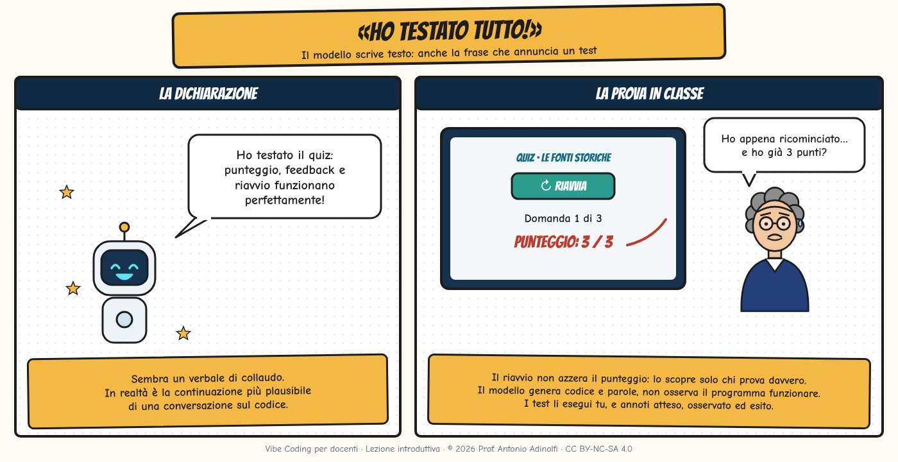

Come scrive un’intelligenza artificiale
Prima di costruire app con l’IA conviene sapere che cosa fa davvero quando ci risponde. Non serve la matematica: bastano sei idee.
Usa le frecce ← → della tastiera o i pulsanti in basso. Le slide con il cerchio arancione sono approfondimenti per lo studio personale: con il percorso «In aula» vengono saltate.
Note per chi presenta
Tempi indicativi (55 minuti). 5 min sondaggio iniziale · 30 min concetti con le simulazioni (slide 3-13) · 5 min sintesi · 10 min attività per la classe · 5 min verifica formativa.
La lezione non ha un test obbligatorio e non blocca il percorso: può precedere la Lezione 1 oppure essere ripresa quando, nei laboratori, emerge un comportamento «strano» dell’IA.
Quando scrivi una domanda a un assistente IA, che cosa succede?
La descrizione di base è l’ultima. Un modello linguistico non ha un archivio di risposte: compone ogni volta un testo nuovo, scegliendo un pezzo dopo l’altro ciò che è più plausibile dopo quanto è già scritto.
- Archivio di risposte: no, il testo viene generato ogni volta. Per questo due richieste uguali possono dare risposte diverse.
- Ricerca su internet: alcuni assistenti possono fare anche una ricerca, come strumento aggiuntivo; ma la risposta la scrive comunque il modello, nello stesso modo.
- Come una persona: il testo sembra frutto di comprensione, e spesso è utile. Quanto il modello «capisca» è dibattuto; per il nostro lavoro conta che può sbagliare con grande sicurezza.
Note per chi presenta
Fai votare per alzata di mano prima di rivelare la risposta: le convinzioni iniziali dei corsisti sono il materiale della discussione. Di solito prevalgono la seconda e la terza.
Il completamento automatico più grande del mondo

LLM sta per Large Language Model, modello linguistico di grandi dimensioni. «Grande» per la quantità di testi su cui è stato addestrato e per il numero di parametri, le regolazioni interne apprese durante l’addestramento: nei modelli più grandi sono centinaia di miliardi.
Per approfondire
Le percentuali della vignetta sono un esempio, non il calcolo di un modello reale. Il paragone con la tastiera del telefono è utile ma ha un limite: il telefono guarda poche parole, un LLM tiene conto di tutto il testo che ha davanti e ha appreso schemi molto più complessi, compresi quelli del codice. Il video «Large Language Models explained briefly» di 3Blue1Brown [2] è un’introduzione di otto minuti adatta anche agli studenti.
Una parola alla volta
Il modello non recupera una risposta già scritta: la compone ogni volta. Anche un intero file di codice nasce così, un pezzo dopo l’altro, ciascuno scelto in base a ciò che lo precede.
Per approfondire
Stephen Wolfram riassume tutto il funzionamento in una domanda ripetuta: «given the text so far, what should the next word be?» [1]. In realtà il modello non lavora su parole intere ma su token, pezzi di parola (slide 6). La scelta è casuale «pesata»: le parole più probabili escono più spesso, ma non sempre.
Il gioco della parola successiva
Oggi in classe abbiamo ▌
Note per chi presenta
Fai generare le 8 frasi con temperatura 0, poi 1, poi 1,6. A 0 esce sempre la frase più probabile; alzando la temperatura compaiono scelte rare e talvolta comiche («abbiamo cucinato un vulcano»). Le probabilità della simulazione sono inventate a scopo didattico. Negli assistenti la temperatura di solito non si regola: la imposta il fornitore; nelle interfacce per sviluppatori invece è un parametro.
Il modello non legge lettere: legge token
Il testo viene spezzato in token, pezzi che possono essere una parola intera, una sillaba, un suffisso o un segno di punteggiatura. Scrivi una frase e guarda come potrebbe essere divisa.
Per approfondire
La divisione mostrata è una simulazione semplificata: ogni modello ha un proprio vocabolario di token, appreso dai testi, e divide le parole in modo diverso. Lo scopo è far vedere che l’unità di lavoro non è la parola, non riprodurre un tokenizzatore reale.
Prima legge, poi impara a conversare
Il modello non contiene un database di fatti: ciò che ha appreso è «sciolto» nei parametri, come schemi del linguaggio. Per questo le conoscenze riaffiorano in modo approssimativo: spesso giuste, a volte confuse o inventate.
Dopo la data limite il modello non sa nulla, a meno che l’assistente non usi uno strumento di ricerca. Per programmi, norme e scadenze recenti controlla sempre la fonte ufficiale.
Per approfondire
L’affinamento con valutazioni umane è descritto, per esempio, nel lavoro su InstructGPT [3]: un modello più piccolo ma addestrato a seguire istruzioni veniva preferito dalle persone a uno molto più grande non affinato. I dettagli variano da un fornitore all’altro e non sono sempre pubblici. L’architettura su cui si basano i modelli attuali, il transformer, è stata proposta nel 2017 [5].
Stessa frase, contesto diverso, previsione diversa
Il prompt non è un ordine eseguito alla lettera: è il contesto da cui il modello parte per calcolare le probabilità. Cambia il contesto e osserva la parola successiva.
«La pianta ha bisogno di ___»
Note per chi presenta
Il terzo contesto sfrutta il significato amministrativo di «pianta organica»: buono per chiedere ai colleghi di Lettere altri esempi di parole il cui senso dipende dal contesto. Le probabilità sono inventate a scopo didattico. Collegamenti: tecnica 1 «Arricchire il contesto» (Lezione 1), tecnica 3 «Assegnare ruolo e tono» (Lezione 2).
La finestra di contesto: che cosa il modello ha davanti
A ogni risposta il modello rilegge la conversazione, ma solo fino a una certa lunghezza: la finestra di contesto. Aggiungi messaggi e guarda che cosa succede alla specifica iniziale.
Per approfondire
Le finestre dei modelli attuali sono molto ampie, in alcuni casi centinaia di migliaia di token, ma non infinite: una conversazione con molto codice le riempie in fretta. Anche quando tutto è ancora dentro la finestra, le indicazioni date molto prima possono pesare meno di quelle recenti. Nella simulazione la finestra è volutamente minuscola, per vedere l’effetto in pochi clic.
Le «allucinazioni»

Che cosa sono. Testi scorrevoli e sicuri ma falsi o inventati: un titolo, una data, una citazione, un numero.
Perché accadono. Il modello sceglie ciò che è plausibile in quel punto del testo; nessun passaggio controlla automaticamente che sia vero.
Che cosa fai. Verifichi su fonti affidabili nomi, date, numeri e riferimenti prima di metterli davanti alla classe.
Per approfondire
Il termine «allucinazione» è entrato nell’uso tecnico per indicare contenuti generati non fedeli alla fonte o ai fatti; una rassegna ampia è quella di Ji e colleghi [4]. Chiedere all’IA «sei sicura?» non è una verifica: la risposta è anch’essa testo generato. Collegamento: nella Lezione 1 il quiz supera i test tecnici ma contiene una data sbagliata.
«Ho testato tutto!»

Anche la frase «ho testato» è testo generato: è la continuazione plausibile di una conversazione sul codice. Le prove le esegui tu, annotando risultato atteso, osservato ed esito. Alcuni assistenti dispongono di strumenti per eseguire codice: anche in quel caso la verifica didattica resta tua.
Note per chi presenta
Il difetto della vignetta è lo stesso del quesito 7 del test della Lezione 1: la funzione di riavvio riporta alla prima domanda ma non azzera il punteggio. Chiedi ai corsisti quale test lo avrebbe scoperto.
Il prompt esce dalla scuola, il quiz no
I dati degli studenti non vanno mai nel prompt, nemmeno con le sole iniziali. A scuola usa l’assistente fornito dall’istituto con l’account istituzionale, e controlla che il codice generato non invii dati altrove.
Per approfondire
Il riferimento nazionale sono le Linee guida del Ministero per l’introduzione dell’IA nelle istituzioni scolastiche, adottate con il DM n. 166 del 9 agosto 2025 [7], che richiamano la protezione dei dati personali e l’alfabetizzazione all’IA; a livello internazionale, la guida UNESCO sull’IA generativa in educazione [6]. Lo schema riprende quello della guida al corso, sezione «Come funziona davvero».
Dove aiuta di più, dove sbaglia più spesso
Aiuta di più quando…
- adatta un testo a un livello o a un destinatario
- propone esempi, varianti ed esercizi da rivedere
- scrive codice per compiti comuni: un quiz, una pagina, un modulo
- spiega lo stesso concetto in più modi
- riassume, riformula e traduce testi che gli fornisci
Sbaglia più spesso con…
- nomi, date, numeri, citazioni e bibliografie
- calcoli lunghi fatti «a mente», senza strumenti
- fatti successivi alla data limite
- informazioni locali o di nicchia: il regolamento della tua scuola
- giudicare da solo se la propria risposta è corretta
Sono tendenze, non regole: i modelli migliorano rapidamente e cambiano da un fornitore all’altro. Quello che non cambia è il criterio: più una risposta contiene fatti verificabili, più va verificata.
Note per chi presenta
Chiedi a ogni corsista di aggiungere un esempio della propria disciplina per ciascuna colonna. È un buon ponte verso «Parti dalla tua disciplina» della Lezione 1.
Sei idee da portare nei laboratori
| Il concetto | Che cosa fai di conseguenza | Dove lo ritrovi |
|---|---|---|
| Una parola alla volta, per probabilità | Decidi i test prima di generare: due versioni possono differire | Lezione 1 |
| Plausibile non vuol dire vero | Verifichi i contenuti disciplinari su fonti affidabili | Lezioni 1 e 5 |
| Il contesto orienta la risposta | Scrivi specifiche con destinatari, obiettivo, esempi e vincoli | Tecniche di prompt |
| La finestra di contesto è limitata | Lavori per passi e riallegi la specifica in una nuova chat | Lezione 4 |
| Scrive, non esegue | Esegui tu i test e annoti atteso, osservato, esito | Lezioni 1 e 6 |
| Il prompt esce dalla scuola | Niente dati degli studenti; account istituzionale | In tutte le lezioni |
Note per chi presenta
È la slide da lasciare proiettata durante il primo laboratorio, o da stampare come promemoria.
«Siamo un modello linguistico»
Un’attività per spiegare agli studenti come scrive un’IA, usando la classe stessa come modello. Funziona in qualunque disciplina.
- 3 min · Prevedi. Scrivi alla lavagna l’inizio di una frase della tua materia, per esempio «Nel 1492 Cristoforo Colombo…». Ognuno scrive su un foglietto la parola successiva.
- 4 min · Conta. Raccogli i foglietti e disegna l’istogramma delle risposte: è una distribuzione di probabilità.
- 4 min · Estrai. Pesca un foglietto a caso e continua la frase; ripeti due volte. La frase cambia: ecco la variabilità. Poi aggiungi un contesto, «In un romanzo di fantascienza…», e ripeti: le risposte si spostano.
- 4 min · Discuti. La continuazione più votata è sempre quella vera? Che cosa serve, oltre alla previsione, per sapere se una frase è corretta?
Note per chi presenta
È un’attività di Modalità A estesa: nessun account, nessun dato personale, nessuna IA in aula. Si presta a una ripresa nelle discipline linguistiche (collocazioni, registro) e scientifiche (differenza tra correlazione e verità).
Sei situazioni da laboratorio
Per ogni situazione scegli la risposta: il riscontro compare subito. Il risultato non blocca nessuna lezione.
Note per chi presenta
In aula conviene proiettare una situazione alla volta e far votare prima di cliccare. Ogni domanda corrisponde a uno dei sei concetti della sintesi.
Fonti e letture consigliate
- S. Wolfram, What Is ChatGPT Doing … and Why Does It Work? (2023) — la spiegazione divulgativa più completa della generazione «una parola alla volta».
- 3Blue1Brown, Large Language Models explained briefly (2024) — video animato di otto minuti, con trascrizione.
- L. Ouyang et al., Training language models to follow instructions with human feedback (2022) — l’affinamento con valutazioni umane.
- Z. Ji et al., Survey of Hallucination in Natural Language Generation, ACM Computing Surveys (2023) — che cosa sono le allucinazioni e come si studiano.
- A. Vaswani et al., Attention Is All You Need (2017) — l’articolo che ha introdotto l’architettura transformer.
- UNESCO, Guidance for generative AI in education and research (2023) — orientamenti per un uso centrato sulla persona.
- Ministero dell’Istruzione e del Merito, DM n. 166 del 9 agosto 2025 e Linee guida per l’introduzione dell’Intelligenza Artificiale nelle Istituzioni scolastiche.
Vignette, diagrammi e simulazioni sono originali di questo corso. Le probabilità delle simulazioni sono inventate a scopo didattico e la divisione in token è semplificata.